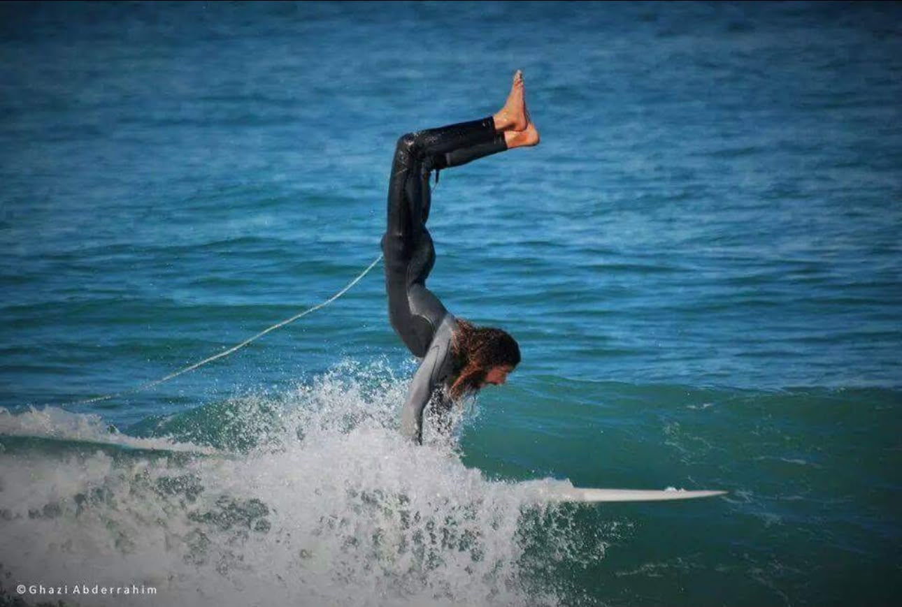

MONITEUR / 01
Taoufik El Ansari
Brevet fédéral de surf · 1er degré
Fédération Royale Marocaine de Surf · 2014

05 / L’ÉQUIPE BLUE WAVE
Taoufik et Said El Ansari.
À vos côtés, du sable aux vagues.
FORMÉS POUR VOUS ACCOMPAGNER
Leurs diplômes d’aptitude de la Fédération Royale Marocaine de Surf attestent du brevet fédéral de 1er degré obtenu en 2014.
Pour une première vague ou un nouveau cap, retrouvez un enseignement attentif à votre niveau, à votre aisance et aux conditions du jour.
Préparer mon cours ↗
MONITEUR / 01
Brevet fédéral de surf · 1er degré
Fédération Royale Marocaine de Surf · 2014

MONITEUR / 02
Brevet fédéral de surf · 1er degré
Fédération Royale Marocaine de Surf · 2014